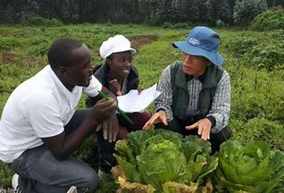

Crop Market App was created by 5 ShecanCode girls in cohot2
with the main objectives of providing an easy way of markerting for growing cooperative of famers.
In our country especially in rural area there is problem of lack of market
So we sit together and discuss about how can we solve that problem then we decide to create a CMA(Crop Market App)
that will connect Bulk buyer and Cooperative of farmers
Bulk Buyer and Cooperative manager must register in system
before asking a setrvice so that we have to make sure that is either bulk buyer or cooperative known by government
|  |
||